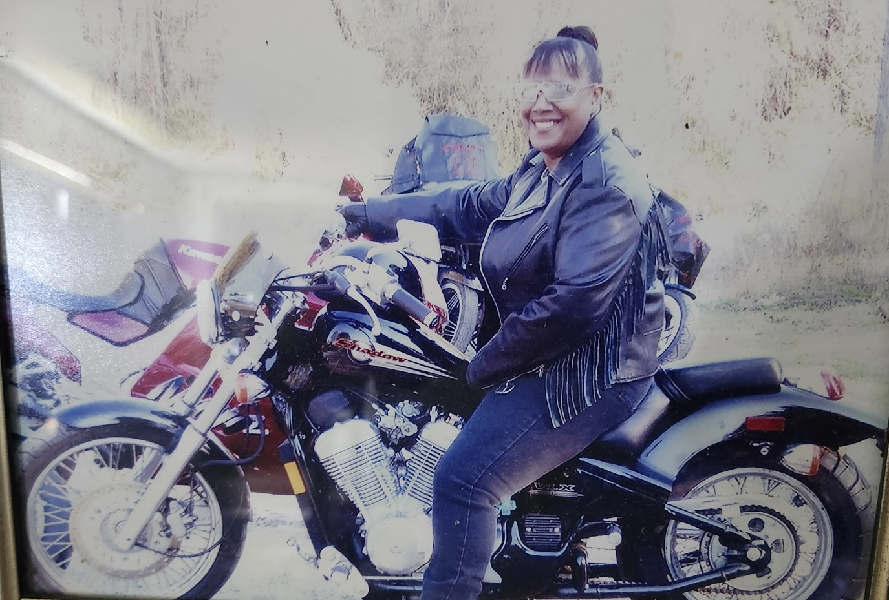
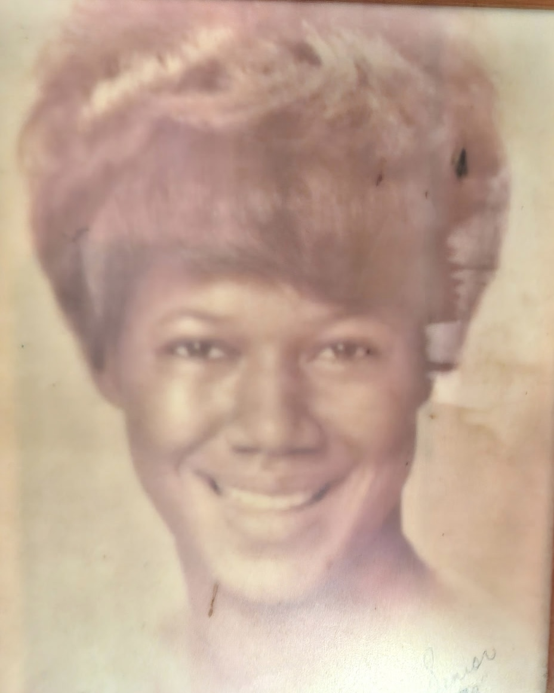
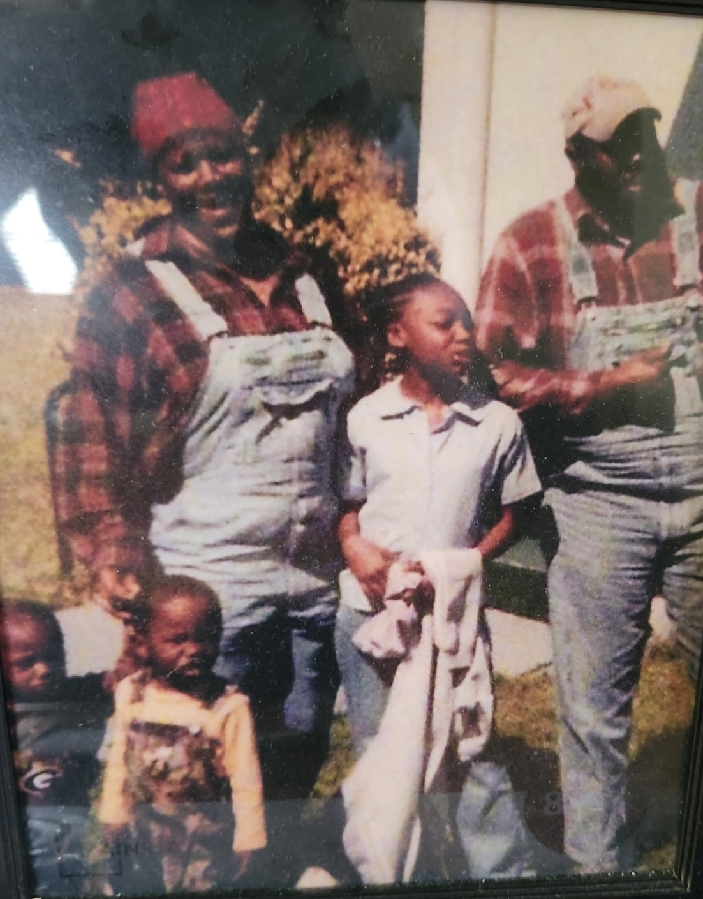
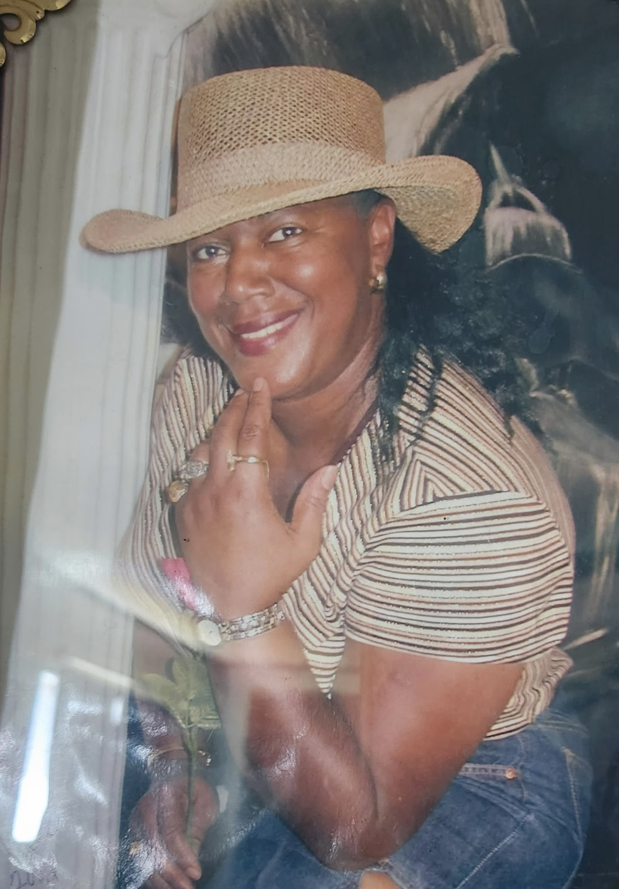

As a Black- and Queer-owned business, A Town Taps embodies the soul of Atlanta, a city where culture flows as freely as conversation, where every neighborhood tells a story, and where community isn't just a word, it's a way of life. Culture on Tap celebrates the vibrant tapestry of people, history, and moments that make Atlanta a global cultural powerhouse, one locally crafted drink at a time.
At the heart of our mission rolls Red, our flagship mobile beverage bike. More than just a vehicle, she's a tribute to founder Aja Murray's beloved Granny, Gwen Moye. Known affectionately as "Red," she was pure Georgia magic: a small-town dirt road homegrown woman, a fierce protector, and a joy-bringer who lived by the beautiful truth that "y'all means all." When Gwen threw a party, it wasn't just an event, it was an experience. She was the gravitational center of every celebration, the matriarch who made everyone feel like family.
Her extraordinary spirit lives on in our Red, Atlanta's pioneering mobile beverage bike. Bold yet welcoming, rooted yet revolutionary, she's designed to do exactly what Gwen did best: bring people together and create unforgettable moments. Gwen's legacy flows through every aspect of A Town Taps, inspiring our commitment to community and our dedication to Good Trouble, creating inclusive spaces where authentic connection and joyful celebration naturally unfold.
A Town Taps exists to honor the culture-makers, the community-builders, and the everyday heroes who make Atlanta extraordinary. Through Red and our expanding vision, we're not just serving drinks, we're curating experiences that celebrate Atlanta's creativity, diversity, and unmatched spirit.
A-Town Taps was built to celebrate Atlanta the people, the creativity, the gatherings, and the moments that make this city special. With Red leading the way, A-Town Taps is creating new ways for people to come together and experience Atlanta culture, one drink at a time.
Ready to bring Culture on Tap to your next event? Contact A-Town Taps to get started.



